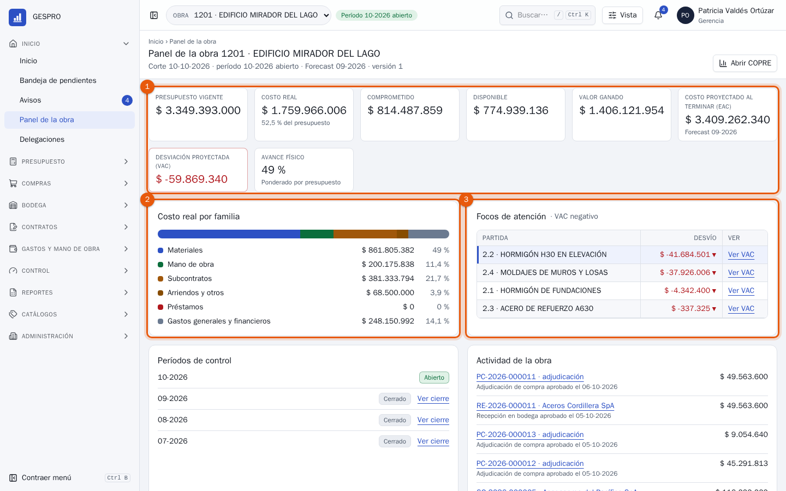
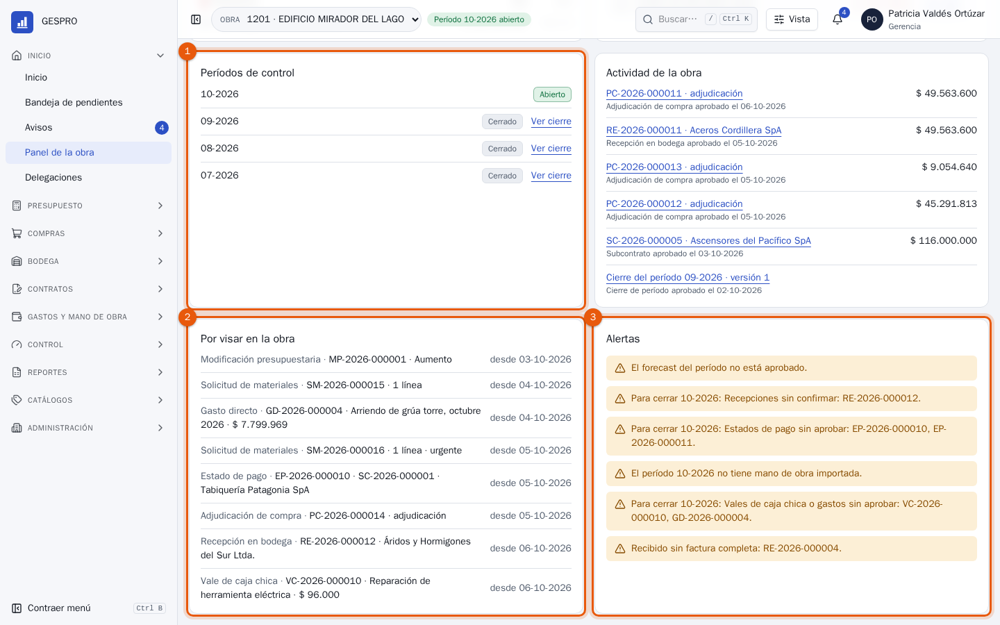
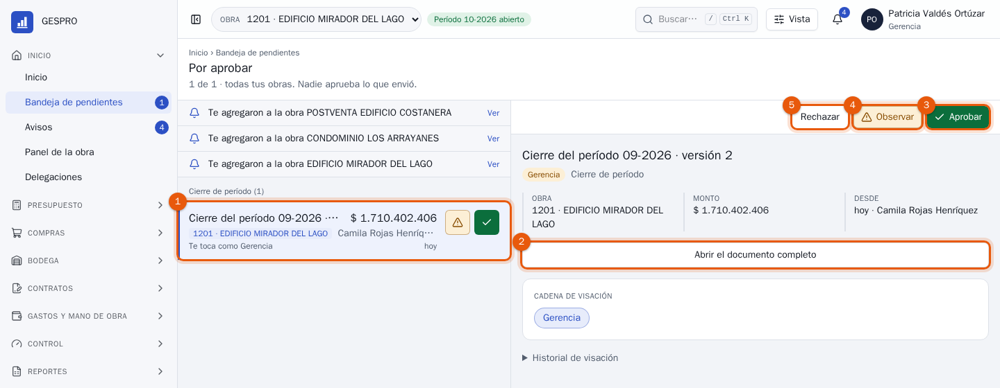
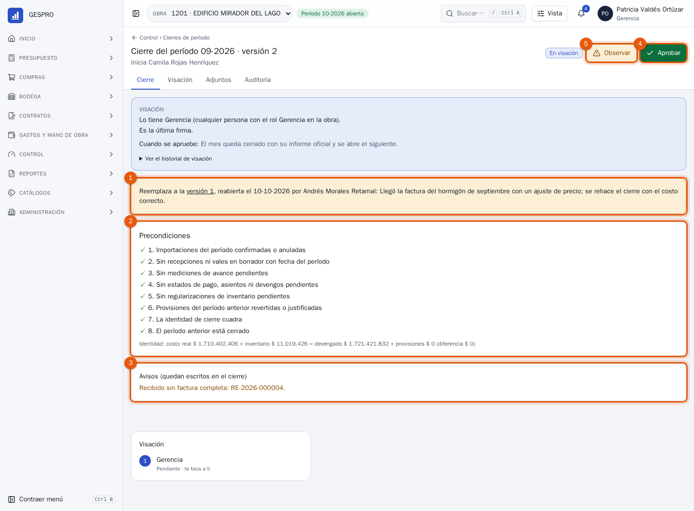
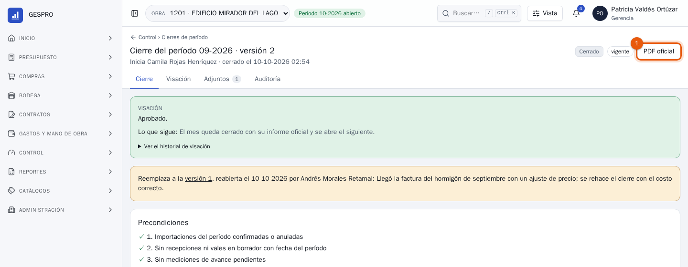
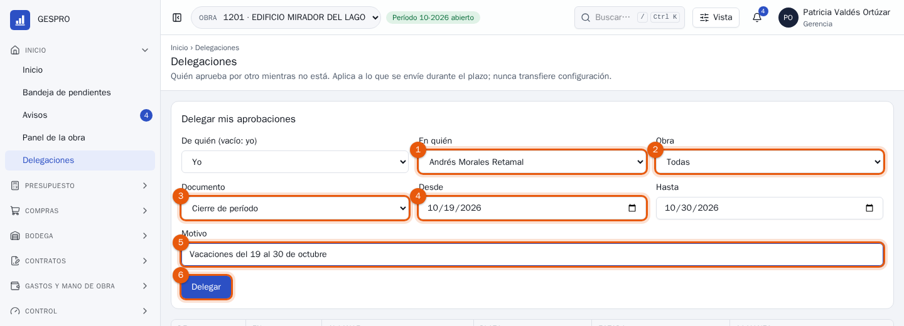
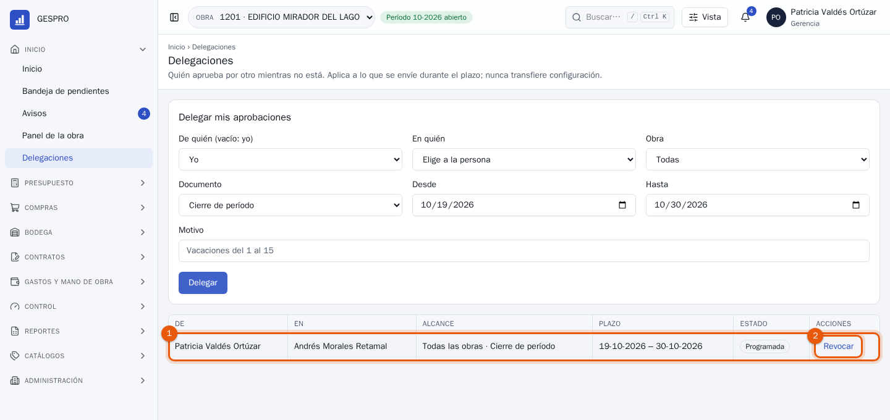
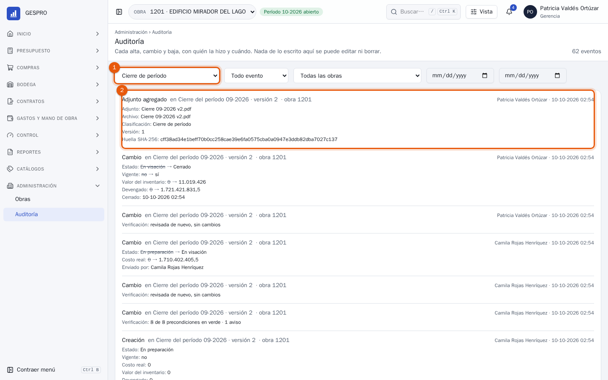

Manual de usuario
Gerencia en GESPRO
Para la gerencia general: ver cómo va cada obra y el holding completo, entrar al detalle de la que preocupa, aprobar el cierre de cada mes, delegar las aprobaciones durante una ausencia y revisar quién hizo qué.
- Rol en GESPRO
- Gerencia
- Sus pantallas
- Inicio · Panel de la obra · Bandeja · Cierres de período · Delegaciones · Auditoría
- Ejemplos con
- Patricia Valdés · holding Altamira
1Lo que hace gerencia
Gerencia ve todas las obras de todas las empresas del holding, sin necesidad de ser miembro de cada una, y firma el cierre de cada mes. No digita documentos: el costo llega solo desde cada compra, recepción, estado de pago o planilla aprobada, y control de gestión lo deja listo para cerrar.
- Costos del mesLlegan desde cada documento aprobado.
- ForecastControl de gestión lo calcula; el gerente de construcción lo visa.
- Cierre preparadoControl de gestión revisa las precondiciones y lo envía.
- AprobaciónGerencia firma, observa o rechaza.
- Informe oficialEl mes queda congelado, con su PDF.
| Puede | Dónde |
|---|---|
| Ver todas las obras, sus cifras y sus documentos | Inicio, el panel y cualquier pantalla de la obra |
| Aprobar, observar o rechazar el cierre del período | Bandeja o la ficha del cierre |
| Delegar sus aprobaciones, y las de otras personas | Inicio › Delegaciones |
| Consultar la auditoría de todas las obras | Administración › Auditoría |
Las cadenas de visación son configurables. Si la empresa decide que gerencia también firme el forecast o un presupuesto, el administrador la agrega a esa cadena y esos documentos llegan a la misma bandeja.
2Todas las obras de un vistazo
Al entrar, Inicio muestra la cartera: cada obra con su avance, presupuesto, costo real, proyección al terminar y desviación, agrupadas por empresa y con el total del holding.

- La conclusión. Cuántas obras hay, cuánto del presupuesto ya se gastó y cuántas proyectan pérdida, en una línea.
- La empresa. Las obras se agrupan por empresa; la flecha pliega el grupo y la fila de total suma solo esa empresa.
- Desviación (VAC). Lo que la obra va a costar de más (en rojo, con ▼) o de menos al terminar, según su último forecast aprobado. Es la columna que hay que mirar primero.
- Por visar. Cuántos documentos de la obra esperan una firma, de cualquier persona. Un número alto es una obra que se está atascando.
- Abrir la obra. Cambia la obra activa y lleva a su panel.
- Total del holding. La suma de todas las empresas.
El avance es físico y ponderado por presupuesto: lo construido, no lo gastado. Una obra con 49 % de avance y 52,6 % del presupuesto gastado va gastando más rápido de lo que avanza.
3El panel de una obra
Inicio › Panel de la obra reúne, para la obra activa, las cifras, lo que más se desvía y lo que impide cerrar el mes. Cada cifra abre su detalle.

- Los indicadores. Presupuesto vigente, costo real, comprometido (pedido y no recibido), disponible, valor ganado, costo proyectado al terminar (EAC), desviación proyectada (VAC) y avance físico.
- Costo real por familia. En qué se fue la plata: materiales, mano de obra, subcontratos, arriendos, préstamos y gastos generales.
- Focos de atención. Las partidas con mayor pérdida proyectada. Ver VAC abre el Informe COPRE en esa partida.

- Períodos de control. El mes abierto y los cerrados, cada uno con su cierre.
- Por visar en la obra. Cada documento que espera firma y desde cuándo, lo más antiguo arriba.
- Alertas. Lo que hoy impediría cerrar el mes (recepciones sin confirmar, estados de pago sin aprobar) y los avisos que quedarán escritos en el cierre.
El detalle de cada partida está en el Informe COPRE, que se explica en el manual de control de gestión.
4Aprobar el cierre del mes
Cuando control de gestión envía el cierre de un mes, llega a la Bandeja de pendientes de gerencia y el menú muestra el contador. El ejemplo es un caso real del día a día: el gerente de construcción reabrió septiembre porque llegó una factura con un ajuste de precio, y control de gestión lo volvió a cerrar.

- El cierre. Período, versión, obra, quién lo envió y el costo real que cierra.
- Abrir el documento completo. Antes de firmar un cierre conviene verlo entero.
- Aprobar. Cierra el mes. Hay 5 segundos para deshacer antes de que se envíe.
- Observar. Lo devuelve a control de gestión con un comentario; lo corrige y lo vuelve a enviar.
- Rechazar. Descarta este cierre y el mes vuelve a quedar abierto; habrá que iniciar otro.

- Por qué se rehízo. Si el mes se reabrió, la ficha dice qué versión reemplaza, cuándo, quién la reabrió y su motivo.
- Las ocho precondiciones. Sin documentos del mes pendientes, la identidad de cierre cuadrada y el mes anterior cerrado. Sin las ocho en verde no se puede enviar ni aprobar.
- Los avisos. Lo que no impide cerrar pero conviene saber, como una recepción sin factura completa. Quedan escritos en el cierre.
- Aprobar. Se vuelven a revisar las precondiciones y, en el mismo acto, se congelan las cifras de cada partida, el mes queda cerrado y se abre el siguiente si no lo estaba.
- Observar. Igual que en la bandeja: vuelve a control de gestión con el comentario.
Bajo las precondiciones está la cuenta que el sistema verifica: el costo real más el inventario en bodega es igual a todo lo devengado más las provisiones. Si no cuadra, algo entró al costo sin pasar por su documento, y el cierre no se puede aprobar.
5El informe oficial
Al aprobar, el cierre pasa a Cerrado · vigente y en un momento queda su PDF oficial: el Informe COPRE del mes con las cifras congeladas.

- PDF oficial. Abre el informe del mes. También queda en la pestaña Adjuntos del cierre.
Un mes cerrado no cambia. Si después llega un costo con fecha de ese mes, entra al mes abierto como extemporáneo y queda listado en Cierres de período. Si hay que corregir el mes, el gerente de construcción lo reabre con un motivo; la versión anterior queda íntegra y consultable.
6Delegar mientras no está
Antes de unas vacaciones, Inicio › Delegaciones deja a otra persona aprobando por gerencia durante esos días. Gerencia también puede registrar la delegación de otra persona, con De quién.

- En quién. La persona que aprobará en su lugar.
- Obra. Todas, o solo una.
- Documento. Todos, o un tipo, como el cierre de período.
- Desde y hasta. Aplica a lo que se envíe a visación dentro del plazo.
- Motivo. Queda escrito y lo ve quien recibe la delegación.
- Delegar. La guarda.

- La delegación. De quién, en quién, su alcance, su plazo y su estado: Programada, Vigente, Vencida o Revocada.
- Revocar. Termina la delegación antes de tiempo, por ejemplo al volver antes.
La delegación traspasa la firma, no la configuración: quien la recibe no puede cambiar cadenas, usuarios ni permisos. Y la regla de siempre sigue en pie: nadie aprueba lo que él mismo envió.
7La auditoría
Administración › Auditoría registra cada alta, cambio y baja de cada documento: qué cambió, de qué valor a cuál, quién y cuándo. Nada de lo escrito ahí se puede editar ni borrar.

- Los filtros. Tipo de registro, evento, obra y fechas. Aquí, solo los cierres de período.
- Un evento. Qué documento, qué cambió (tachado el valor anterior), quién lo hizo y cuándo.
Cada ficha tiene además su pestaña Auditoría con la historia de ese documento.
8Siglas
- COPRE
- Control presupuestario: el informe por partida con presupuesto, costo, compromiso y proyección.
- EAC
- Costo proyectado al terminar: lo gastado más lo que falta, según el forecast.
- VAC
- Desviación al terminar: presupuesto menos EAC. Negativa es pérdida.
- Valor ganado
- Lo que vale, a precio de presupuesto, lo que ya se construyó.
- Comprometido
- Lo pedido o contratado que todavía no se recibe ni se paga.
- Forecast
- La proyección del período: cuánto costará cada partida al terminar.
9Preguntas frecuentes
¿Por qué no veo el botón Aprobar en un cierre?
El cierre todavía está en preparación, o ya lo aprobó otra persona con el rol de gerencia. La bandeja solo muestra lo que espera su firma.
Aprobé un cierre por error.
En la bandeja hay 5 segundos para deshacer. Después, el gerente de construcción puede reabrir el período con un motivo; la versión aprobada queda consultable y control de gestión prepara una nueva.
¿Las cifras de la cartera son de hoy?
El costo real y el avance, sí. La proyección (EAC y VAC) es la del último forecast aprobado de cada obra, que se rehace cada mes.
Me fui de vacaciones sin delegar.
El administrador o gerencia puede registrar la delegación por usted en Delegaciones, eligiéndola en De quién. Aplica a lo que se envíe desde ese momento.
¿Puedo ver una obra en la que no soy miembro?
Sí. Gerencia entra a todas las obras en modo lectura; cuando no es miembro, la cabecera lo indica con «(solo lectura)» junto al nombre de la obra.